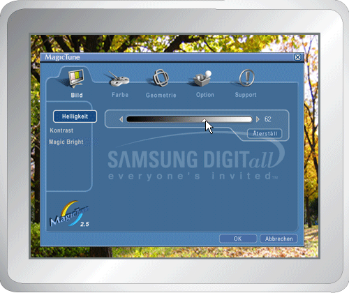
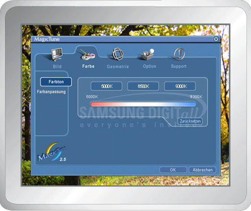
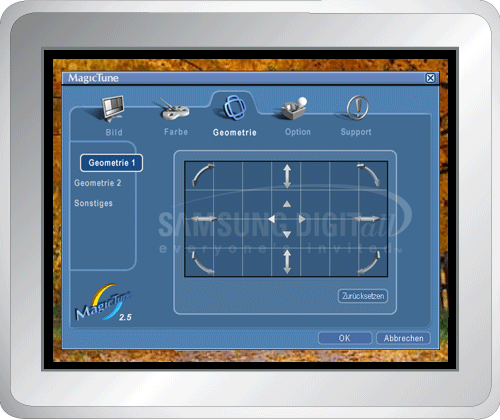
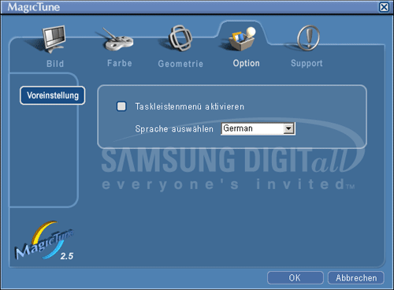
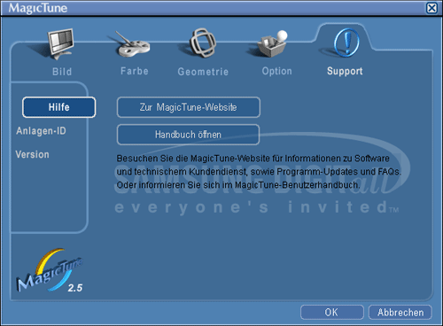

|

|
 |
Dank MagicTune™ ist eine schnelle, sehr genaue Einstellung des Monitors möglich. Sie können Monitorkonfiguration bequem speichern und sich im Anschluss daran die für Sie optimale Einstellung auswählen.
- Je nach den Spezifikationen des jeweiligen Monitors stimmt das Erscheinungsbild des OSD-Modus möglicherweise nicht mit den Erläuterungen im Handbuch überein.
|
|
|

Der OSD-Modus vereinfacht die Durchführung von
Einstellungen auf allen Monitoren. Wird am oberen Rand des Programmfensters eine Registerkarte ausgewählt,
werden die Untermenüpunkte für die Einstellung angezeigt. Jede Registerkarte enthält eine Liste mit Menüs. Für
eine schnelle Anpassung der Monitoreinstellungen erlaubt der OSD-Modus einen
einfachen und komfortablen Zugriff auf alle Registerkarten und
Untermenüpunkte.
|
OK
|
Übernimmt sämtliche Änderungen und beendet MagicTune.
|
|
Zurücksetzen
|
Setzt die auf der aktiven Registerkarte angezeigten
Monitorwerte auf die vom Hersteller empfohlenen Werte zurück.
|
|
Abbrechen
|
Beendet MagicTune, ohne
die vorgenommenen Änderungen zu übernehmen. Wenn Sie keine Änderungen auf der Registerkarte
vorgenommen haben, werden durch Anklicken von „Cancel“ keine Aktionen
bewirkt.
|

|
Diese Registerkarte gestattet Ihnen, die
Bildschirmeinstellungen auf die gewünschten Werte zu setzen.
|
Helligkeit
|
Macht den gesamten Bildschirm heller oder dunkler. Ist die Helligkeit nicht richtig eingestellt, können
die Detaildaten der Bilder in dunklen Bereichen verloren gehen. Passen Sie die Helligkeit an, um optimale
Betrachtungsbedingungen zu schaffen.
|
|
Kontrast
|
Stellt den Helligkeitsunterschied zwischen den hellsten
und den dunkelsten Bereichen auf dem Bildschirm ein. Bestimmt die Schärfe der Bilder.
|
|
MagicBright™
|
TDrücken Sie die MagicBright-Taste erneut, und wählen Sie den gewünschten Modus
aus.- Zur Auswahl stehen vier verschiedene Modi.
- Text: Für Unterlagen, Tabellen und alle Arbeiten mit umfangreichem Text.
- Internet: Optimal für eine Mischung aus Texten und Bildern, wie z. B. Grafiken.
- Spiel: Zur Darstellung von bewegten Bildern, z. B. in einem Spiel.
- Unterhaltung: Zum Ansehen von Filmen, von z. B. DVD oder VCD.
- Text: Für Unterlagen, Tabellen und alle Arbeiten mit umfangreichem Text.
- Internet: Optimal für eine Mischung aus Texten und Bildern, wie z. B. Grafiken.
- Unterhaltung: Zum Ansehen von Filmen, von z. B. DVD oder VCD.
|
|
Hier wird die „Wärme“ der Bildschirmfarben
eingestellt.

|
Farbton
|
Sie können den Farbton ändern.
- Warm - Normal - Kalt
- Benutzerdefiniert
|
|
Farbanpassung
|
Passt die Bildschirmfarben an.
Sie können die Bildschirmfarben nach Ihren
persönlichen Wünschen anpassen und den von Ihnen gewünschten Farbanteil
einstellen.
|
Passt die Werte für Position ,
Größe und Drehung an.

|
Geometrie 1
|
Passt die Werte für Position (Bildlage), Size (Größe) und Rotation (Rotation) an.
|
|
Geometrie 2
|
Passt die Werte für Kissenverzerrung , Krümmung, Trapezoid und Parallel an.
- Kissenverzerrung
- Krümmung
- Trapezoid
- Parallel
|
|
Sonstiges
|
Passt die Werte für Moire,
Entmagnetisieren, Si Eckenkorrektur oben und Krümmung obere an.
- Moire
- Entmagnetisieren
- Si Eckenkorrektur oben
- Eckenkorrektur unten
- Krümmung obere Ecke
- Krümmung untere Ecke
|
Sie können MagicTune mithilfe
der folgenden Optionen konfigurieren.

|
Voreinstellung
|
Öffnet das Dialogfenster für Vorzugseinstellungen. Die benutzten Vorzugseinstellungen sind mit einem „V“
im Kontrollkästchen gekennzeichnet. Zum Ein- oder Ausschalten einer Vorzugseinstellung setzen Sie den Cursor
auf das Kästchen und klicken es an.
- System-Tray aktivieren.
- Um die MagicTune Menüs
aufzurufen, klicken Sie auf das Symbol im [System-Tray].
Die Menüs werden nicht angezeigt, wenn die Auswahl von [Enable System
Tray] unter [Options] - [Basic Settings] rückgängig gemacht wurde.
- Sprache wählen – Die gewählte Sprache betrifft nur
die Sprache des Bildschirmmenüs (OSD).
|
Auf dieser Registerkarte werden die Asset ID und die
Versionsnummer des Programms angezeigt. Außerdem kann von hier aus die
Hilfe-Funktion aufgerufen werden.

|
Hilfe
|
Wenn Sie Hilfe bei der Installation oder Ausführung von
MagicTune benötigen, besuchen Sie bitte die MagicTune Internetseite oder klicken Sie hier, um
die Hilfe-Dateien (Bedienungsanleitung) zu öffnen. Die Bedienungsanleitung wird in einem Browser-Fenster
geöffnet.
|
|
Anlagen-ID
|
Öffnet ein Informationsfenster, das das
Herstellungsdatum des Monitors angibt.
|
|
Version
|
Zeigt die Versionsnummer von MagicTune.
|
|

 Die Registerkarte Bild
Die Registerkarte Bild  OSD-Modus
OSD-Modus